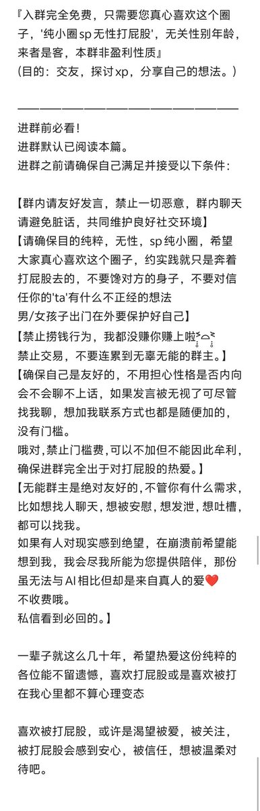
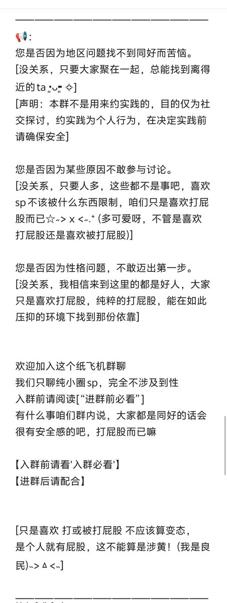
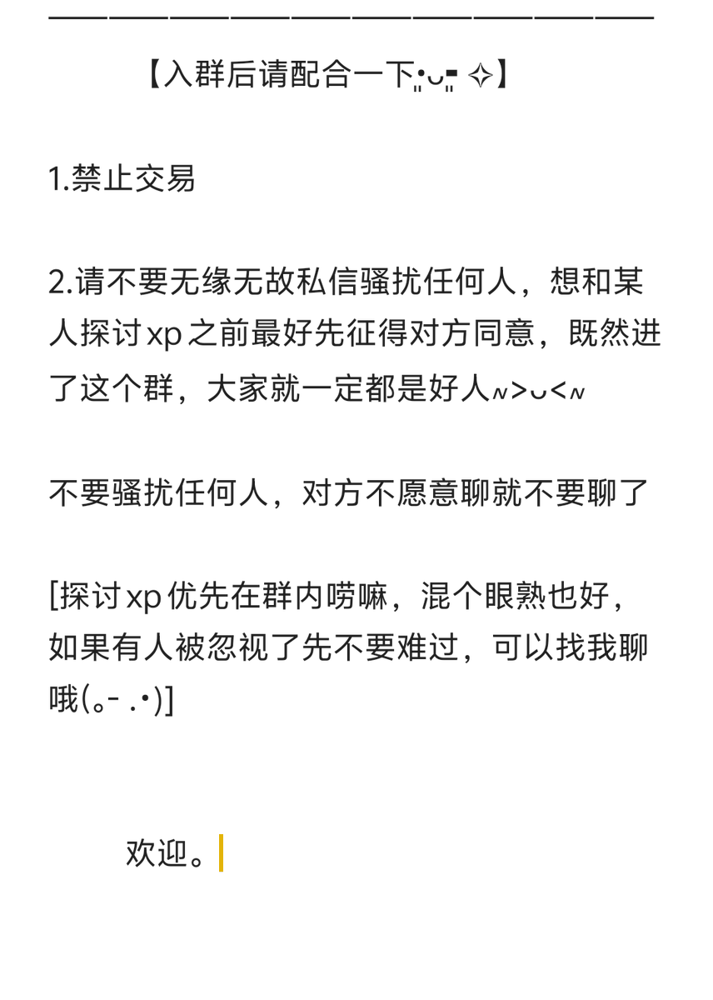

北雁冬翼（simone luxem）🏳️⚧️🏳️🌈🔬
@Simone_Luxem
帮忙分享一下，这段时间自己的目测结论是对性少数很友好的，嗯，大概同为性少数的同好应该知道这在国内的环境中是多么少见…
群主也很可爱可以调戏（划掉



枫糖(✧∇✧)
@Feng_Tang0634
如果建个纸飞机的sp纯小圈无性聊天群有人要进吗•͈ᴗ⁃͈ ✧
【进群前请确保阅读以下图片内容】
qv可能不如纸飞机隐私一些吧。
无审核，希望进来的是纯粹的sp纯小圈无性打屁股爱好者，群内禁止交易，谨防受骗
可以探讨xp，分享您的想法，幻想过的，编写过的，经历过的……
https://t.co/Bay0BX0sO6 https://t.co/HdJHwt22VI https://t.co/2SCipnucSv